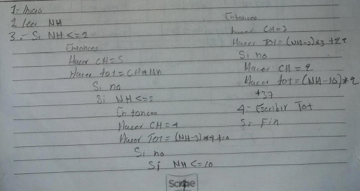
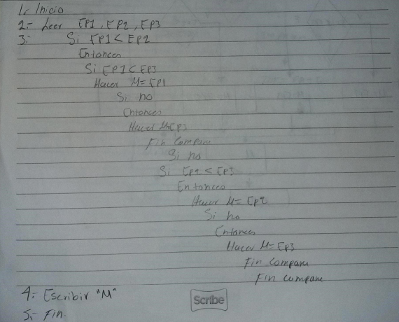
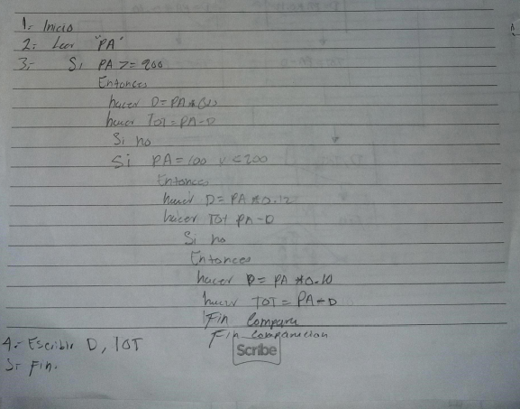
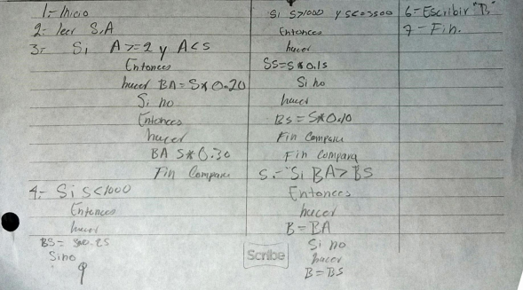
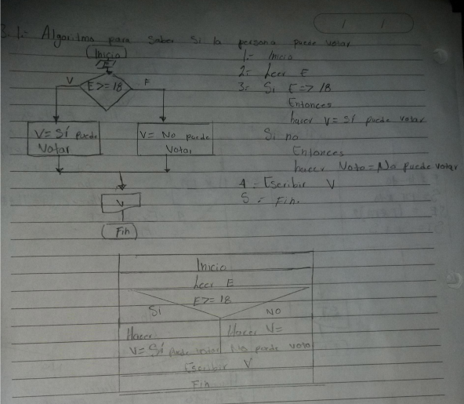

Problemas resuelto con Pseudocódigo
3.4 El dueño de un estacionamiento requiere un diagrama de flujo con
el algoritmo que le permita determinar cuánto debe cobrar por el
uso del estacionamiento a sus clientes. Las tarifas que se tienen son
las siguientes:
Las dos primeras horas a $5.00 c/u.
Las siguientes tres a $4.00 c/u.
Las cinco siguientes a $3.00 c/u.br
Después de diez horas el costo por cada una es de dos pesos

3.5 Se tiene el nombre y la edad de tres personas. Se desea saber el
nombre y la edad de la persona de menor edad. Realice el algoritmo
correspondiente y represéntelo con un diagrama de flujo, pseudocódigo y diagrama N/S

3.6 Realice el diagrama de flujo, el pseudocódigo y el diagrama N/S que
muestren el algoritmo para determinar el costo y el descuento que
tendrá un artículo. Considere que si su precio es mayor o igual a
$200 se le aplica un descuento de 15%, y si su precio es mayor a $100
pero menor a $200, el descuento es de 12%, y si es menor a $100,
sólo 10%.

3.8 Cierta empresa proporciona un bono mensual a sus trabajadores, el
cual puede ser por su antigüedad o bien por el monto de su sueldo
(el que sea mayor), de la siguiente forma:
Cuando la antigüedad es mayor a 2 años pero menor a 5, se otorga
20 % de su sueldo; cuando es de 5 años o más, 30 %. Ahora bien, el
bono por concepto de sueldo, si éste es menor a $1000, se da 25 %
de éste, cuando éste es mayor a $1000, pero menor o igual a $3500,
se otorga 15% de su sueldo, para más de $3500. 10%. Realice el
algoritmo correspondiente para calcular los dos tipos de bono, asignando el mayor, y represéntelo con un diagrama de flujo y pseudocódigo.

3.1 Realice un algoritmo para determinar si una persona puede votar
con base en su edad en las próximas elecciones. Construya el diagrama de flujo, el pseudocódigo y el diagrama N/S.
